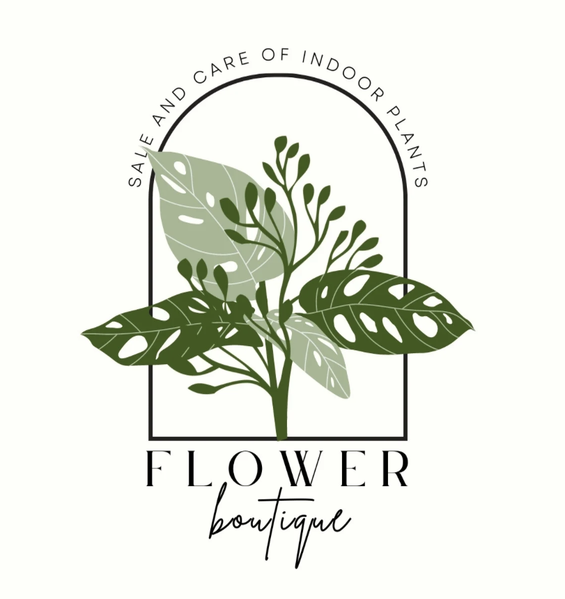

Overview
Purpose
Our purpose is that every person learn how important the plant is in your life and how you can find your identity in it.
Audience
To everyone with love and passion for the planet, for people who want to decorate their home and also want to tell people who they are through nature. Here is your place
Branding
Website Logo
Style Guide
Color Palette
Palette URL:
https://coolors.co/396e94-e7c24f-a43312-381d2a-aabd8c| Primary | Secondary | Accent 1 | Accent 2 |
|---|---|---|---|
| [#396E94] | [#E7C24F] | [#A43312] |
Typography
Heading Font: AmatiSC
Paragraph Font: Gruppo
Normal paragraph example
If you're looking for high-quality live plants, look no further than our Peña Family plants. Whether if you're looking for indoor plants to brighten up your home or outdoor plants to add some life to your garden, We know how to help. Also, our staff is always available to answer any questions that you may have and help you find the perfect plant for your needs, either for your home or office. Our focus is in quality customer satisfaction.
Colored paragraph example
Here, we offer a variety of live plants that matches to different types of gardening people. Our collection includes plants that are very easy to maintain, perfect for families or beginners, and those that require more care and attention. We're here to help you choose the right plant, whether you're looking for something for your backyard or a commercial area. We offer customized solutions for every type of gardening idea or plans, from mild to wild, so you can have your dream garden. With us, you can be sure that your gardening journey it's going to turn heads.
Navigation
Site Map
Wireframes
Home